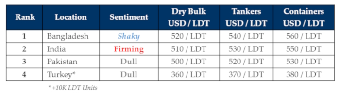

inWeekly Demolition Reports27/05/2024

As the summer / monsoon months creep closer, ship recycling markets in Turkey and the Indian sub-continent have beenfirming over recent weeks, as Pakistan, though still relatively firm, feels sluggishly satiated of late having taken in a healthy collection of vessels / LDT (for this market’s size) and despite having bested last year’s recycling volumes with another 3 fresh arrivals this week, continues to endure a rather glum outlook as Pakistani demand & pricing face hurdles that have resulted in this market being the weakest / lowest placed of all sub-continent destinations due to (a) the ever-present lack of workable tonnage, (b) firmer demand from neighbors resulting in increased competition on workable units, and (c) the ugly problems associated with a growing lack of U.S. Dollar reserves that seems to be rearing its hungry head in the country once again.
In fact, the issue surrounding a shortage of U.S. Dollar reserves has been most acute in Bangladesh over the recent year and changes affecting the country’s economy over recent weeks certainly have all of the prime markers for this issue to resurface for air once again, as a drastic devaluing of the Bangladeshi Taka over recent weeks has seen increasingly nervy Gadani Choppers holding off on tabling offers on available units, unsure whether potentially hazardous incoming L/C restrictions would result in further price falls in the coming week(s), resulting in freshly concluded deals becoming renegotiation-worthy museum pieces immediately upon arrival. Moreover, as the industry gears up for summer, Bangladesh’s Budget for fiscal year 2024 – 2025 is due to be announced early June as this market preps for another forecasted decline through June / early July.
India on the other side, has been on an upward trajectory over recent weeks (including this one), as Alang Recyclers gear up to grab the pricing-baton from the Chattogram crew, as weekly improvements only stand to compliment their ongoing show-stopping purchases on specialist and even the rare unit(s) that have been introduced for an HKC recycling sale of late, as there clearly is an aggression to acquire ships on the back of steel prices that have been firming since the start of the voting in the country’s General Elections that concluded another week this week.
Finally, Turkey at the far end seems to have taken up permanent residence in Madame Tussaud’s Wax Museum where things only ‘seem’ to be alive, as this market continues to die inside with no movement reported in fundamentals (a good thing for the Lira), no reports of local fixtures or even arrivals at Aliaga’s anchorage as Turkey continues to defy all logical explanations as to just how Aliaga Recyclers are even able to keep their yards open at all.
For week 21 of 2024, GMS demo rankings / pricing for the week are as below.

📄 Download PDF: Ship-recycling-market-insight-Week-21-5-24-2024-Strange_Summer.pdfSource: GMS,Inc.https://www.gmsinc.net/gms_new/index.php/web